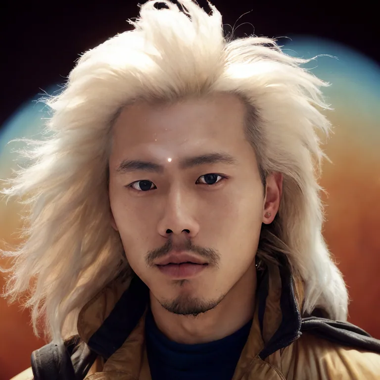
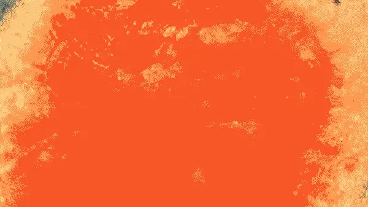
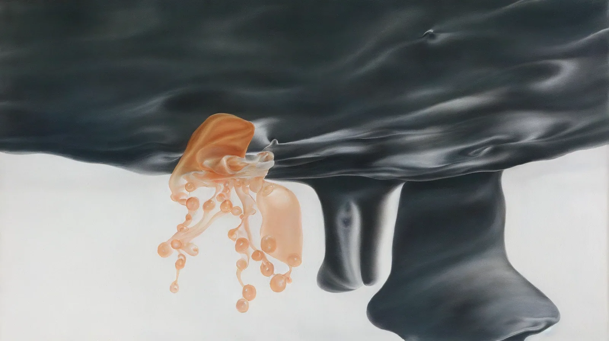
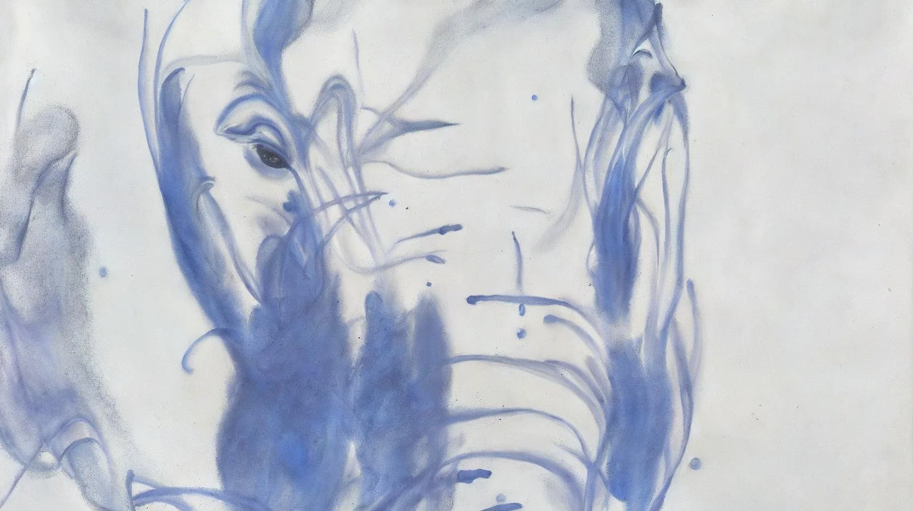
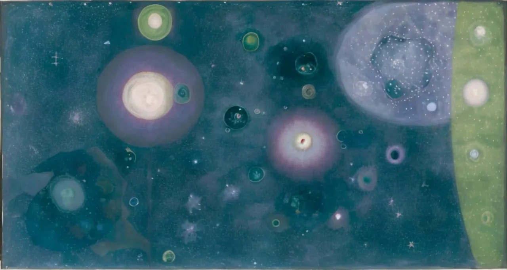
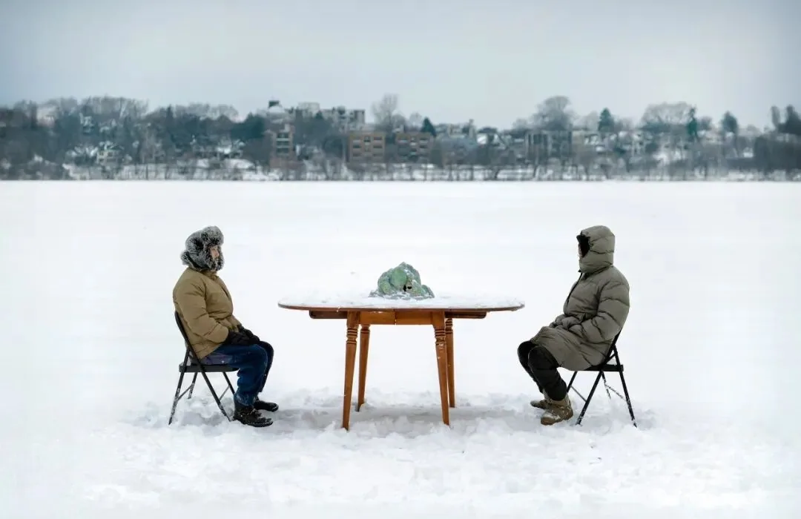
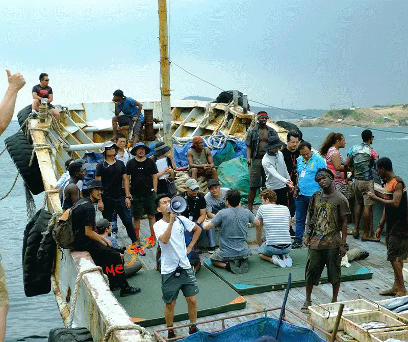
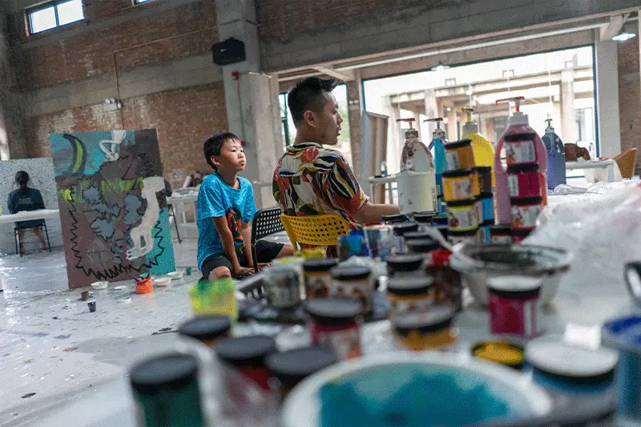
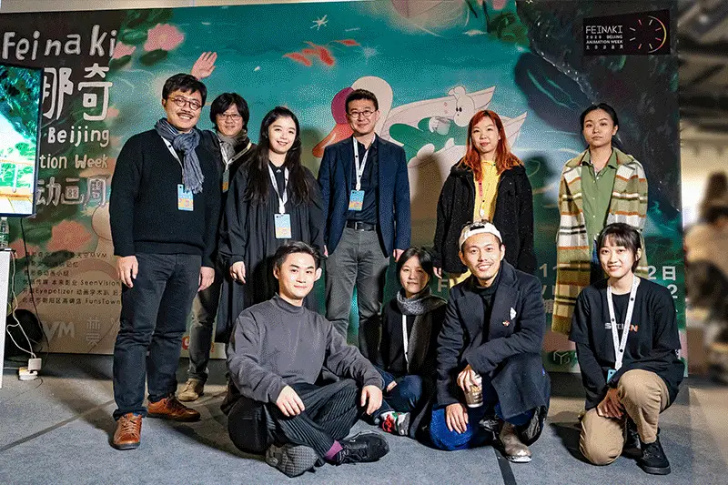

These earlier studio notes preserve animation process, teaching and festival material from the previous website. For my current practice and contact details, visit About.

Born in China and trained in the UK, Youyang received his Master's degree in animation from the Royal College of Art in London and has exhibited his work internationally across Europe, Asia, and North & South America.
In 2019 he co-founded Feinaki Beijing Animation Week, an independent animation festival. He teaches, curates and organises between China and the United States.
V
{)I(}
WWWWWWWW
wwwwwwwww .
. x*r
WWW . '" . .XX...
Thank you for checking me out \(0u0)N
. 5\o. . . / . Z_.)
V.

As a traditionally trained 2D animation artist researching the field of generative AI and multi-sensory digital transformation, I am constantly in awe of the nonstop technological breakthroughs I witness, yet often look back to my pen and brushes that inspired me to make art and build my deep emotional connections with the physical touch in the first place.

I try to create art that combines both innovative digital tools and the traditional tactile artistic mediums that speak to the multitude of daring innovations and deeply bonded emotional engagement in the continuum of creative expressions.

My recent animation film 'Inside My Eyes'(2023) based on Japanese writer Yuko Taniguchi's poem, explores an overwhelmed mind space organically painted in motion in the watercolor/ oil/ biogenic histology look only enabled by the power of AI image generation.






Still frames from 'Inside My Eyes' 2023, img2img AI-augmentation experiment

A second film followed the same year. Begin with Pieces (2023) takes another Yuko Taniguchi poem into a synesthetic mind-space, recited by the adolescents of the Creativity Camp Study and premiered at the Weisman Art Museum.


As someone who has lived a nomadic life often traveling between distinctly different cultures, I feel like an alien body to most of the places where I live and worked, yet I believe my bilingual background and multicultural perspective equipped me to become a skilled people person who holds critical world views but can communicate with an open mind in great patience, which manifested from my diverse working experience in leading art workshops, organizing film festivals, public speaking, directing and assisting film productions.

In 2020, as the operational director of Feinaki Animation Week, I was invited to curate an artist talk alongside writing an article about Chinese independent animation for the International Short Film Festival Winterthur in Switzerland, which was then published on the film critic website 'Talking Shorts'.

Thank you for your patience in spending time to know me, you're most likely already my friend:)
I am grateful for all the opportunities to connect, collaborate, learn from, and grow with the community of like-minded artists, educators, and innovators.
If you have any queries in mind or feel like we might click, leave me a sweet greeting message